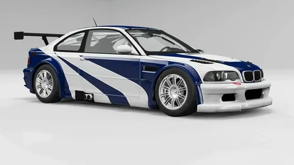
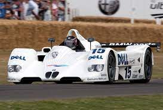
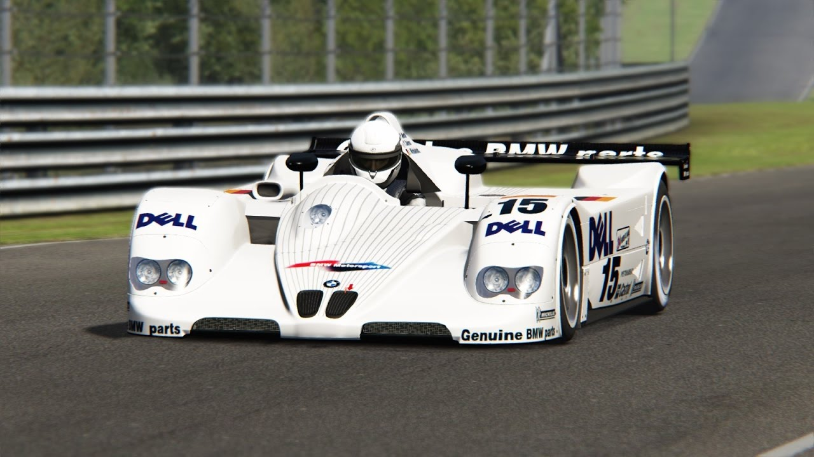
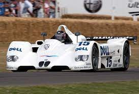
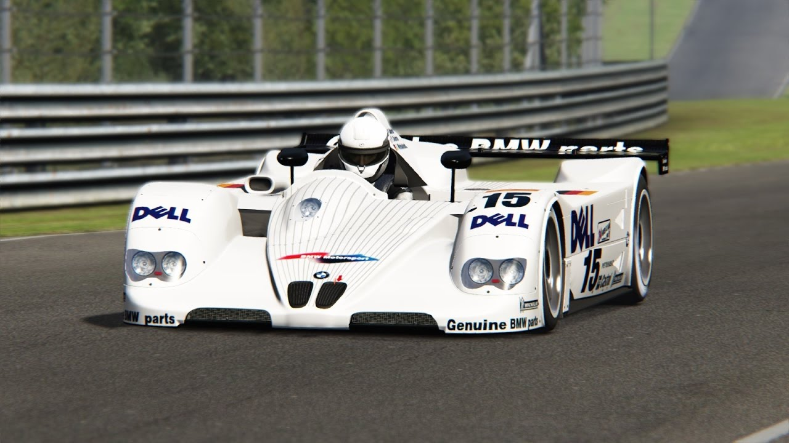
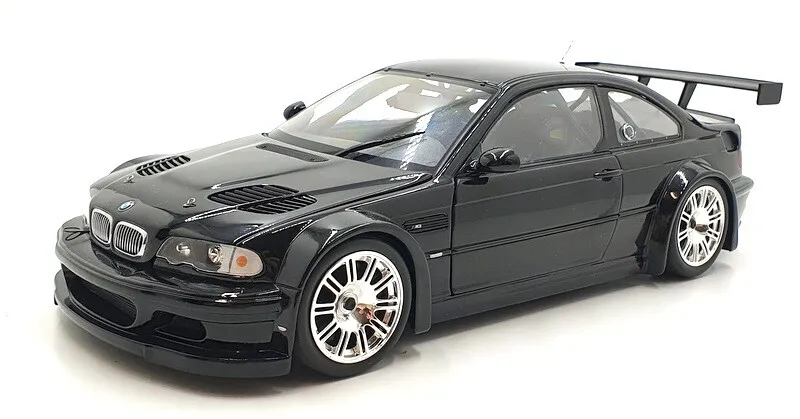
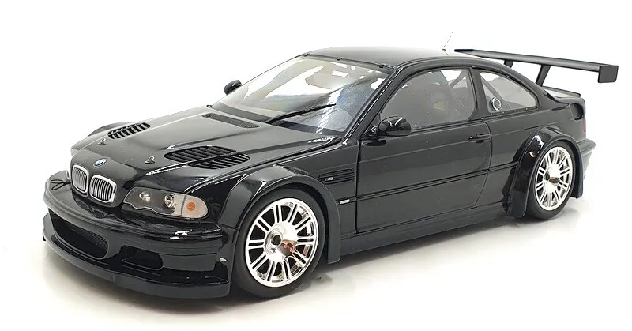

CARS
Bayerische Motoren Werke ("Bavariya Mühərriklər Zavodu")
BMW
BMW şirkəti Münhendə təyyarə mühərriklər zavodu kimi Karl Fridrix Rapp, Kamillo Kastilyon, Maks Frits tərəfindən 1916-cı ildə təsis edilib. İlkin dövrdə qəbul olunmuş və hal-hazırdada istifadə olunan ağ-mavi rəngli emblem fırlanan təyyarə propellerinin təsviri BMW-nin ilkin "təyinat"ının nişanəsidir. İlkin dövrdə şirkət Avstriya-Macarıstan üçün V12 tipli mühərriklər istehsal etməyə başlayır. Tezliklə Rapp əlavə pula ehtiyac duyur və kompaniyanı tərk edir. Onun yerinə avstriyalı sərmayəçi Frans Cozef Popp firmaya rəhbərlik etməyə başlayır. Birinci dünya müharibəsindən məğlub çıxmış Almaniyada hərbi qüvvələrə məhdudiyyət qoyulur. Bundan sonra Almaniyada təyyarə istehsal edilə bilməzdi — beləliklə BMW-nin mühərrik istehsalı Almaniya üçün yararsız oldu. 1922-ci ildə BMW Münhendə özünün bugünkü əsas binasını tikir. (Hal-hazırda həmin bina şəhər Olimpiya Mərkəzi kimi də fəaliyyət göstərir). 1923-cü ildə Münhendə ilk BMW motosikletləri istehsal olunmağa başlayır. 1928-ci ildə BMW Türingiyada avtomobil zavodu alır və öz ilk maşınını istehsal etməyə başlayır — Dixi. 1934-cü ildə Şirkət ayrılır. Təyyarə mühərriklərinin istehsalı müstəqillik qazanır. BMW Flugmotorenbau GmbH bir şirkət olaraq ayrılır. 1936-cı ildə BMW şirkəti 2 litrlik mühərrikli BMW 328 istehsalına başlayıb. Bu maşın o zaman Berlində keçirilmiş Olimpiya yarışlarında Avropada idman avtomobilləri sinifində ən böyük müvəffəqiyyət əldə etmişdir. 1939-cu ildə BMW şirkəti Berlin-Şpandauda yeni Brandenburgische Motorenwerke şirkətini alır və onunla birlikdə Berlin yaxınlığındakı Basdorf və Sülsdorfda xüsusiləşdirilmiş zavodlara sahib olur. İkinci dünya müharibəsi dövründə BMW əsasən Almaniya ordusu üçün reaktiv motorlar istehsal edirdi. 1945-ci ildə müharibədən sonra onun bu fəaliyyəti qalib tərəfin gözündən yayınmadı, BMW-yə 3 illik istehsal moratorisi tədbiq edildi. Bundan əlavə müharibədən sonra BMW-nin demək olar ki, bütün zavodları bombardmanlar nəticəsində məhv olmuşdu. Hər şeyi yenidən başlamaq lazım idi. 1948-ci ildən başlayaraq BMW R24, təksilindirli motosiklet və 1951-ci ildə isə BMW müharibədən sonra öz ilk avtomobilini istehsal edir — BMW 501. 1955 — BMW Triebwerk GmbH şöbəsi yenidən fəaliyyətə qayıdır. Şirkət təyyarə mühərriklər üzərində mütəxəssisləşir. Isetta modeli ilə şirkət kiçik avtomobillət klasının tarixini başladır. 1956 — İdman avtomobilləri olan 503 və 507-ci modellər istehsala buraxılır. 1959 — BMW şirkəti satışa çıxarılır. 1965 — BMW Triebwerkbau GmbH şöbəsi satılır və sonrakl 25 il ərzində şirkət təyyarə mühərriklərini düzəltməkdən imtina edir. 1974 — BMW ilk dəfə ABS sistemli 3.0 CSL avtomobillərini yarışlara çıxardır. 1980 — ABS sisteminin sənaye istehsalatı və Formula 1 yarışları üçün mühərrikin istehsalatı başlanır. BMW-nin motosiklləri Paris-Dakar rallisini udur. Daha sonra həmin yarışda yenidən üç dəfə qalib gəlir.
Mənim Bacarıqlarım
OYUNCAQ MAŞINLAR
WEB SƏHİFƏ
ŞƏKİLLƏR
Tərəfdaşlar
Layihələr tamamlandı
Lahiyəni Sevənlər
Görüşlər
Mənim Qiymətim
- Basic
- Oyuncaq Maşınlar
- Aftoqroflar
- Şəkillər
- Maşınları almaq
-
50 Manat
Hər Həfdə
- Pro
- Saytın Popularşması
- Bütün Bmw Aftoqrofları
- Bütün Oyuncaq Maşınları
- Maraqlı Məlumatlar
-
100 Manat
Hər Ay
BMW E38 MODELKASI

BMW BMW MSPORT
BMW E38

Togrul_2009 BMW COMPANY
BMW FANATI
Oyuncaq Maşınlar
 



 

Əlaqə Saxla
Mirzə İbrahimov Keşlə Qəsəbəsi
Telefon:+994777674886
Mail:mmmdovtogrul710@gmail.com
Mesaj Yaz